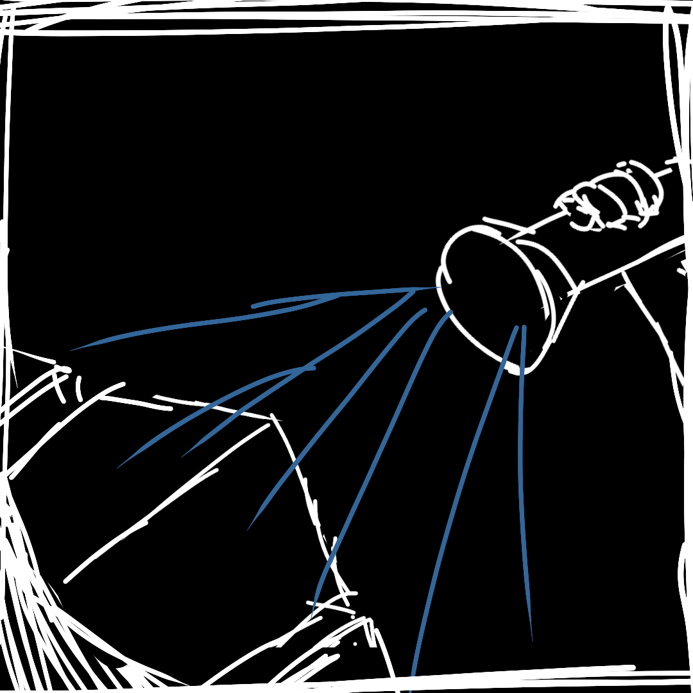

He brought you to a room filled with packages. He removes 16 packages from the shelf. Each of them has a label that looks like this:
He places them on a table, in a 4x4 grid. "Are these lootboxes?" You asked.
"Yes, but these aren't your typical lootboxes. Try to open them and see what you get."
| ◯ ? |
He removes the opened packages on the table, and prepares a new set of lootbox with the exact same labels. "Now look at what happens when I do this."
He pulls out a mystical device from his pocket, points it at the packages, and presses a button. The device radiates a strong blue light at the packages.
"Try to open the packages again."
| ◯ ? |
"Interesting, isn't it? As long as the packages are not opened, we can change the states of the objects inside the packages, and make everything blue," he explained.
"These aren't merely lootboxes, these are quantum lootboxes. The balls are in a SUPERPOSITION state."
"For a normal lootbox, the object inside is predefined: it is either red or blue, even before you open it."
"For a quantum lootbox, however, the state of the object is not defined until you open the lootbox. You have some chance of getting red, and some chance of getting blue. This state is called a SUPERPOSITION state."
"The opening of the box is called a 'measurement'. When you perform a measurement, the ball's state will 'collapse'. It will become either red or blue according to the probability."
"What is great about it is that, you can alter the chance of getting red or blue before opening it, like using my device here. Can't do this with normal lootboxes!"
"Of course, SUPERPOSITION states aren't just limited to colours." He removed some more packages from the shelves. Their labels look like this:
"This is a different type of package. Try to open them."
| ◯ ? |
"A quantum object can be in a SUPERPOSITION states of multiple sizes, or multiple locations, or even moving at multiple speeds at multiple directions. This enables so much possibility with quantum mechanics!"
You nod your head. What he said seemed to be important, so you noted a keyword inside your memo.